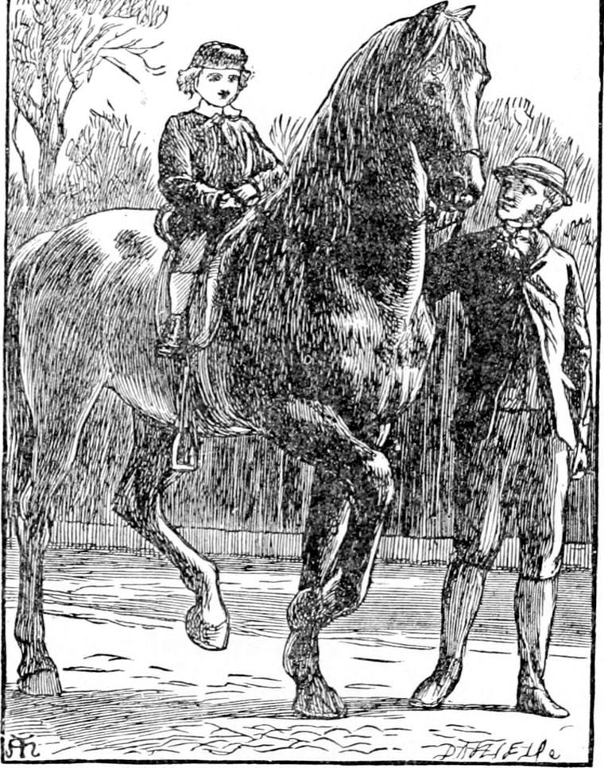
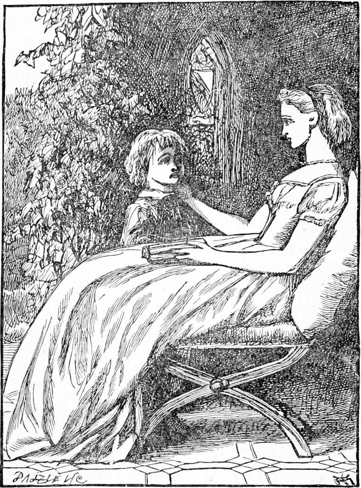
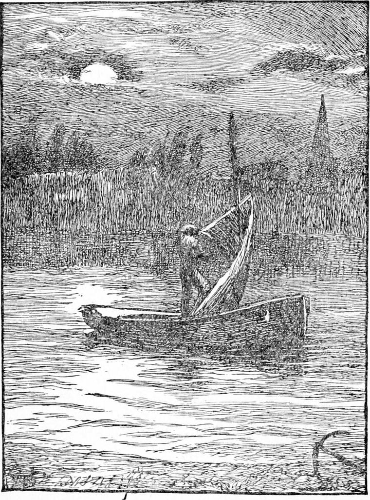

DIAMOND said nothing to his mother about his adventures. He had half a notion that North Wind was a friend of his mother, and that, if she did not know all about it, at least she did not mind his going anywhere with the lady of the wind. At the same time he doubted whether he might not appear to be telling stories if he told all, especially as he could hardly believe it himself when he thought about it in the middle of the day, although when the twilight was once half-way on to night he had no doubt about it, at least for the first few days after he had been with her. The girl that swept the crossing had certainly refused to believe him. Besides, he felt sure that North Wind would tell him if he ought to speak.
It was some time before he saw the lady of the wind again. Indeed nothing remarkable took place in Diamond's history until the following week. This was what happened then. Diamond the horse wanted new shoes, and Diamond's father took him out of the stable, and was just getting on his back to ride him to the forge, when he saw his little boy standing by the pump, and looking at him wistfully. Then the coachman took his foot out of the stirrup, left his hold of the mane and bridle, came across to his boy, lifted him up, and setting him on the horse's back, told him to sit up like a man. He then led away both Diamonds together.

The boy atop felt not a little tremulous as the great muscles that lifted the legs of the horse knotted and relaxed against his legs, and he cowered towards the withers, grasping with his hands the bit of mane worn short by the collar; but when his father looked back at him, saying once more, “Sit up, Diamond,” he let the mane go and sat up, notwithstanding that the horse, thinking, I suppose, that his master had said to him, “Come up, Diamond,” stepped out faster. For both the Diamonds were just grandly obedient. And Diamond soon found that, as he was obedient to his father, so the horse was obedient to him. For he had not ridden far before he found courage to reach forward and catch hold of the bridle, and when his father, whose hand was upon it, felt the boy pull it towards him, he looked up and smiled, and, well pleased, let go his hold, and left Diamond to guide Diamond; and the boy soon found that he could do so perfectly. It was a grand thing to be able to guide a great beast like that. And another discovery he made was that, in order to guide the horse, he had in a measure to obey the horse first. If he did not yield his body to the motions of the horse's body, he could not guide him; he must fall off.
The blacksmith lived at some distance, deeper into London. As they crossed the angle of a square, Diamond, who was now quite comfortable on his living throne, was glancing this way and that in a gentle pride, when he saw a girl sweeping a crossing scuddingly before a lady. The lady was his father's mistress, Mrs. Coleman, and the little girl was she for whose sake he had got off North Wind's back. He drew Diamond's bridle in eager anxiety to see whether her outstretched hand would gather a penny from Mrs. Coleman. But she had given one at the last crossing, and the hand returned only to grasp its broom. Diamond could not bear it. He had a penny in his pocket, a gift of the same lady the day before, and he tumbled off his horse to give it to the girl. He tumbled off, I say, for he did tumble when he reached the ground. But he got up in an instant, and ran, searching his pocket as he ran. She made him a pretty courtesy when he offered his treasure, but with a bewildered stare. She thought first: “Then he was on the back of the North Wind after all!” but, looking up at the sound of the horse's feet on the paved crossing, she changed her idea, saying to herself, “North Wind is his father's horse! That's the secret of it! Why couldn't he say so?” And she had a mind to refuse the penny. But his smile put it all right, and she not only took his penny but put it in her mouth with a “Thank you, mister. Did they wollop you then?”
“Oh no!” answered Diamond. “They never wollops me.”
“Lor!” said the little girl, and was speechless.
Meantime his father, looking up, and seeing the horse's back bare, suffered a pang of awful dread, but the next moment catching sight of him, took him up and put him on, saying—
“Don't get off again, Diamond. The horse might have put his foot on you.”
“No, father,” answered the boy, and rode on in majestic safety.
The summer drew near, warm and splendid. Miss Coleman was a little better in health, and sat a good deal in the garden. One day she saw Diamond peeping through the shrubbery, and called him. He talked to her so frankly that she often sent for him after that, and by degrees it came about that he had leave to run in the garden as he pleased. He never touched any of the flowers or blossoms, for he was not like some boys who cannot enjoy a thing without pulling it to pieces, and so preventing every one from enjoying it after them.
A week even makes such a long time in a child's life, that Diamond had begun once more to feel as if North Wind were a dream of some far-off year.
One hot evening, he had been sitting with the young mistress, as they called her, in a little summer-house at the bottom of the lawn—a wonderful thing for beauty, the boy thought, for a little window in the side of it was made of coloured glass. It grew dusky, and the lady began to feel chill, and went in, leaving the boy in the summer-house. He sat there gazing out at a bed of tulips, which, although they had closed for the night, could not go quite asleep for the wind that kept waving them about. All at once he saw a great bumble-bee fly out of one of the tulips.

“There! that is something done,” said a voice—a gentle, merry, childish voice, but so tiny. “At last it was. I thought he would have had to stay there all night, poor fellow! I did.”
Diamond could not tell whether the voice was near or far away, it was so small and yet so clear. He had never seen a fairy, but he had heard of such, and he began to look all about for one. And there was the tiniest creature sliding down the stem of the tulip!
“Are you the fairy that herds the bees?” he asked, going out of the summer-house, and down on his knees on the green shore of the tulip-bed.
“I'm not a fairy,” answered the little creature.
“How do you know that?”
“It would become you better to ask how you are to know it.”
“You've just told me.”
“Yes. But what's the use of knowing a thing only because you're told it?”
“Well, how am I to know you are not a fairy? You do look very like one.”
“In the first place, fairies are much bigger than you see me.”
“Oh!” said Diamond reflectively; “I thought they were very little.”
“But they might be tremendously bigger than I am, and yet not very big. Why, I could be six times the size I am, and not be very huge. Besides, a fairy can't grow big and little at will, though the nursery-tales do say so: they don't know better. You stupid Diamond! have you never seen me before?”
And, as she spoke, a moan of wind bent the tulips almost to the ground, and the creature laid her hand on Diamond's shoulder. In a moment he knew that it was North Wind.
“I am very stupid,” he said; “but I never saw you so small before, not even when you were nursing the primrose.”
“Must you see me every size that can be measured before you know me, Diamond?”
“But how could I think it was you taking care of a great stupid bumble-bee?”
“The more stupid he was the more need he had to be taken care of. What with sucking honey and trying to open the door, he was nearly dated; and when it opened in the morning to let the sun see the tulip's heart, what would the sun have thought to find such a stupid thing lying there—with wings too?”
“But how do you have time to look after bees?”
“I don't look after bees. I had this one to look after. It was hard work, though.”
“Hard work! Why, you could blow a chimney down, or—or a boy's cap off,” said Diamond.
“Both are easier than to blow a tulip open. But I scarcely know the difference between hard and easy. I am always able for what I have to do. When I see my work, I just rush at it—and it is done. But I mustn't chatter. I have got to sink a ship to-night.”
“Sink a ship! What! with men in it?”
“Yes, and women too.”
“How dreadful! I wish you wouldn't talk so.”
“It is rather dreadful. But it is my work. I must do it.”
“I hope you won't ask me to go with you.”
“No, I won't ask you. But you must come for all that.”
“I won't then.”
“Won't you?” And North Wind grew a tall lady, and looked him in the eyes, and Diamond said—
“Please take me. You cannot be cruel.”
“No; I could not be cruel if I would. I can do nothing cruel, although I often do what looks like cruel to those who do not know what I really am doing. The people they say I drown, I only carry away to—to—to—well, the back of the North Wind—that is what they used to call it long ago, only I never saw the place.”
“How can you carry them there if you never saw it?”
“I know the way.”
“But how is it you never saw it?”
“Because it is behind me.”
“But you can look round.”
“Not far enough to see my own back. No; I always look before me. In fact, I grow quite blind and deaf when I try to see my back. I only mind my work.”
“But how does it be your work?”
“Ah, that I can't tell you. I only know it is, because when I do it I feel all right, and when I don't I feel all wrong. East Wind says—only one does not exactly know how much to believe of what she says, for she is very naughty sometimes—she says it is all managed by a baby; but whether she is good or naughty when she says that, I don't know. I just stick to my work. It is all one to me to let a bee out of a tulip, or to sweep the cobwebs from the sky. You would like to go with me to-night?”
“I don't want to see a ship sunk.”
“But suppose I had to take you?”
“Why, then, of course I must go.”
“There's a good Diamond.—I think I had better be growing a bit. Only you must go to bed first. I can't take you till you're in bed. That's the law about the children. So I had better go and do something else first.”
“Very well, North Wind,” said Diamond. “What are you going to do first, if you please?”
“I think I may tell you. Jump up on the top of the wall, there.”
“I can't.”
“Ah! and I can't help you—you haven't been to bed yet, you see. Come out to the road with me, just in front of the coach-house, and I will show you.”
North Wind grew very small indeed, so small that she could not have blown the dust off a dusty miller, as the Scotch children call a yellow auricula. Diamond could not even see the blades of grass move as she flitted along by his foot. They left the lawn, went out by the wicket in the-coach-house gates, and then crossed the road to the low wall that separated it from the river.
“You can get up on this wall, Diamond,” said North Wind.
“Yes; but my mother has forbidden me.”
“Then don't,” said North Wind.
“But I can see over,” said Diamond.
“Ah! to be sure. I can't.”
So saying, North Wind gave a little bound, and stood on the top of the wall. She was just about the height a dragon-fly would be, if it stood on end.
“You darling!” said Diamond, seeing what a lovely little toy-woman she was.
“Don't be impertinent, Master Diamond,” said North Wind. “If there's one thing makes me more angry than another, it is the way you humans judge things by their size. I am quite as respectable now as I shall be six hours after this, when I take an East Indiaman by the royals, twist her round, and push her under. You have no right to address me in such a fashion.”
But as she spoke, the tiny face wore the smile of a great, grand woman. She was only having her own beautiful fun out of Diamond, and true woman's fun never hurts.
“But look there!” she resumed. “Do you see a boat with one man in it—a green and white boat?”
“Yes; quite well.”
“That's a poet.”
“I thought you said it was a bo-at.”
“Stupid pet! Don't you know what a poet is?”
“Why, a thing to sail on the water in.”
“Well, perhaps you're not so far wrong. Some poets do carry people over the sea. But I have no business to talk so much. The man is a poet.”
“The boat is a boat,” said Diamond.
“Can't you spell?” asked North Wind.
“Not very well.”
“So I see. A poet is not a bo-at, as you call it. A poet is a man who is glad of something, and tries to make other people glad of it too.”
“Ah! now I know. Like the man in the sweety-shop.”
“Not very. But I see it is no use. I wasn't sent to tell you, and so I can't tell you. I must be off. Only first just look at the man.”

“He's not much of a rower” said Diamond—“paddling first with one fin and then with the other.”
“Now look here!” said North Wind.
And she flashed like a dragon-fly across the water, whose surface rippled and puckered as she passed. The next moment the man in the boat glanced about him, and bent to his oars. The boat flew over the rippling water. Man and boat and river were awake. The same instant almost, North Wind perched again upon the river wall.
“How did you do that?” asked Diamond.
“I blew in his face,” answered North Wind. “I don't see how that could do it,” said Diamond. “I daresay not. And therefore you will say you don't believe it could.”
“No, no, dear North Wind. I know you too well not to believe you.”
“Well, I blew in his face, and that woke him up.”
“But what was the good of it?”
“Why! don't you see? Look at him—how he is pulling. I blew the mist out of him.”
“How was that?”
“That is just what I cannot tell you.”
“But you did it.”
“Yes. I have to do ten thousand things without being able to tell how.”
“I don't like that,” said Diamond.
He was staring after the boat. Hearing no answer, he looked down to the wall.
North Wind was gone. Away across the river went a long ripple—what sailors call a cat's paw. The man in the boat was putting up a sail. The moon was coming to herself on the edge of a great cloud, and the sail began to shine white. Diamond rubbed his eyes, and wondered what it was all about. Things seemed going on around him, and all to understand each other, but he could make nothing of it. So he put his hands in his pockets, and went in to have his tea. The night was very hot, for the wind had fallen again.
“You don't seem very well to-night, Diamond,” said his mother.
“I am quite well, mother,” returned Diamond, who was only puzzled.
“I think you had better go to bed,” she added.
“Very well, mother,” he answered.
He stopped for one moment to look out of the window. Above the moon the clouds were going different ways. Somehow or other this troubled him, but, notwithstanding, he was soon fast asleep.
He woke in the middle of the night and the darkness. A terrible noise was rumbling overhead, like the rolling beat of great drums echoing through a brazen vault. The roof of the loft in which he lay had no ceiling; only the tiles were between him and the sky. For a while he could not come quite awake, for the noise kept beating him down, so that his heart was troubled and fluttered painfully. A second peal of thunder burst over his head, and almost choked him with fear. Nor did he recover until the great blast that followed, having torn some tiles off the roof, sent a spout of wind down into his bed and over his face, which brought him wide awake, and gave him back his courage. The same moment he heard a mighty yet musical voice calling him.
“Come up, Diamond,” it said. “It's all ready. I'm waiting for you.”
He looked out of the bed, and saw a gigantic, powerful, but most lovely arm—with a hand whose fingers were nothing the less ladylike that they could have strangled a boa-constrictor, or choked a tigress off its prey—stretched down through a big hole in the roof. Without a moment's hesitation he reached out his tiny one, and laid it in the grand palm before him.